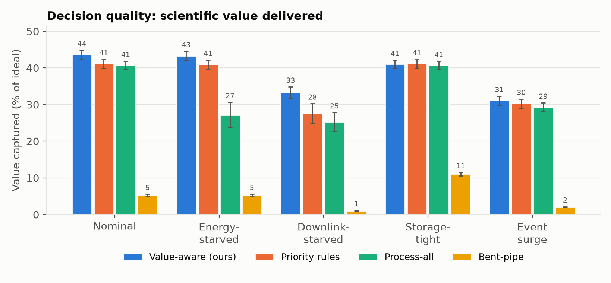
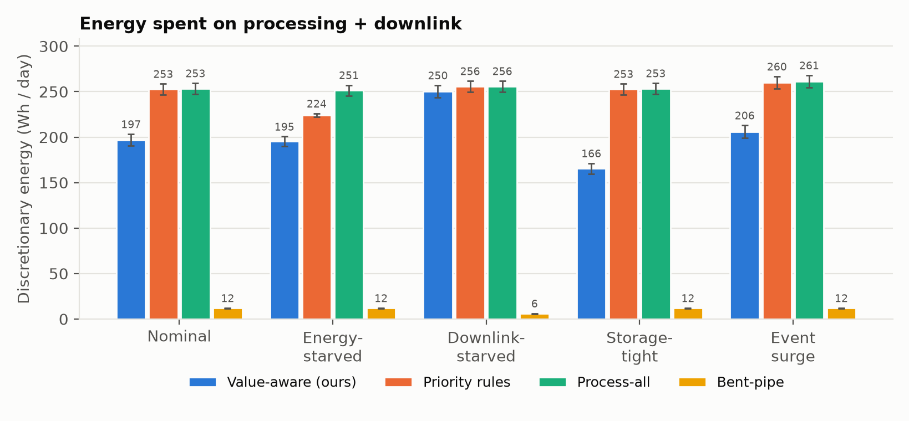
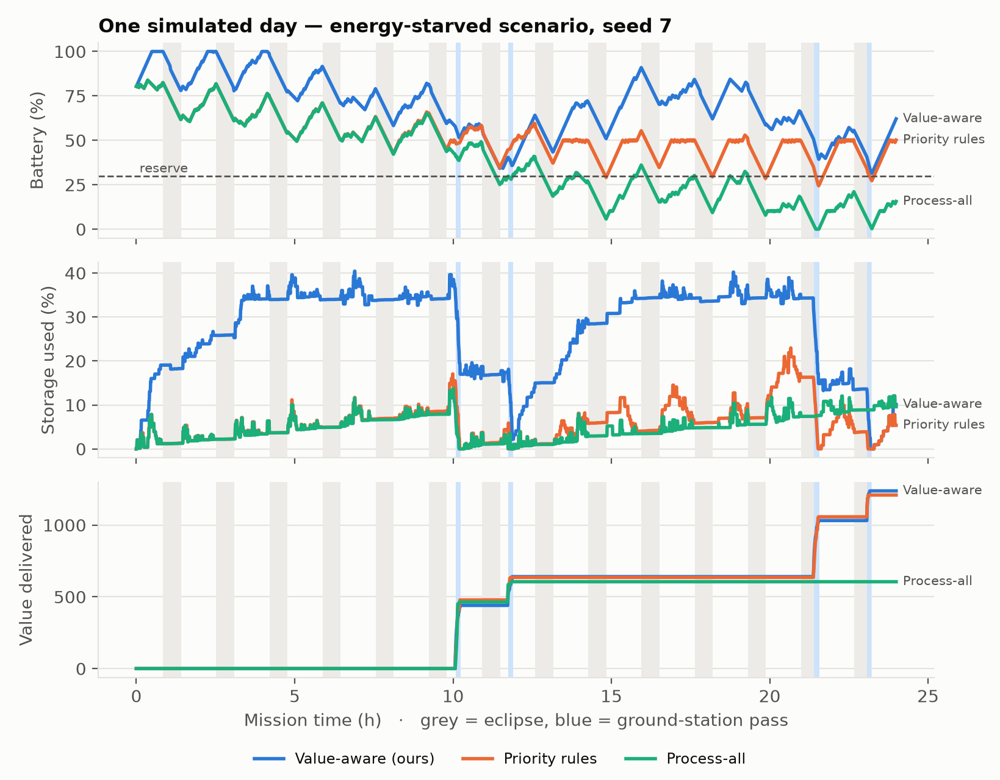
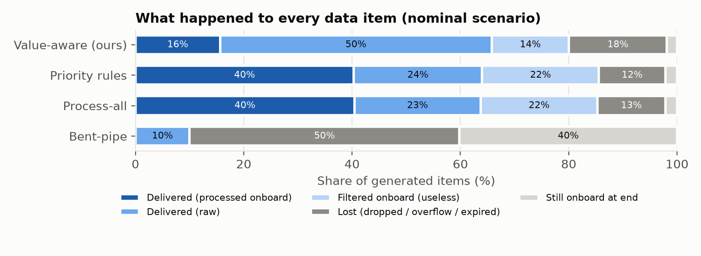

1The problem
A small Earth-observation satellite generates ~90 GB/day but can downlink only ~21 GB/day. For every item: process now, store, transmit, or drop?
- Real orbit: Sentinel-2A TLE (786 km SSO), propagated with SGP4 (skyfield)
- Battery charges only in sunlight: 34-min eclipse every 101-min orbit
- 1 GPU + 4 CPU cores, 8 GB RAM, 32 GB storage
- ~4.4 real passes/day over Toulouse, up to 10 min, 80 Mbit/s
- Value decays with latency: an alert loses half its value per hour
2Our idea
Instruments~90 GB / day
→
Decision engineevery 30 s
→
Process nowStoreTransmitDrop
Forecasts in: passes · eclipses · battery · queues
U = EV − Σr λr · user
net utility = expected value − price of every resource used
- Value each option (raw vs processed): priority × P(useful) × timeliness.
- Price downlink, energy, GPU, CPU, storage: prices rise until the plan fits forecast passes, sunlight and disk.
- Choose the best option per item: PROCESS / RAW / NONE.
- Act: start jobs, order the downlink, guard storage. Re-planned every 30 s.
Take-aways
- Prices turn five coupled constraints into one comparable number per option.
- Biggest gain when the downlink is scarce: +20 % value vs rules. When energy is scarce the battery stays at 35 % vs 4 % for process-all.
- Every choice is logged with its utilities and prices, so operators can audit it.
3How we evaluated
Simulator of power, compute, storage and passes on 20 real days of Sentinel-2A's orbit. 5 scenarios × 4 strategies × 20 days = 400 simulated days.
| Scenario | What binds |
|---|---|
| Nominal | ~90 vs ~21 GB/day |
| Energy-starved | 46 W solar, 60 Wh battery |
| Downlink-starved | 20° mask, 40 Mbit/s |
| Storage-tight | 8 GB mass memory |
| Event surge | 5× urgent events |
Value-aware (ours)
Priority rules
Process-all
Bent-pipe
| Criterion | Our metric |
|---|---|
| Decision quality | value captured (% of ideal) |
| Completed tasks | delivered + filtered onboard |
| Energy | Wh/day, min battery |
| Latency | mean, p95, alerts |
| Resource use | GPU, downlink, storage |
4Explainable decisions
Event candidate → PROCESS NOW
U_proc 10.66 > U_raw 7.54; ~1 MB product vs 33 MB rawHyperspectral cube → TRANSMIT RAW
U_raw 4.47 >= U_proc 2.74 (spare downlink: raw keeps more science)Optical image → DROP
storage guard, lowest value per MB onboard [storage 0.0029/MB]Real log lines, seed 7 (nominal and storage-tight runs).
6Limits & next steps
Limits
- Real orbit and passes; illustrative satellite resources and workload
- One ground station, simple power model
- Completion rate 2–9 pts below the rules (see outcomes)
Next
- Flight compute costs on target hardware
- Hardware-in-the-loop tests
- Learned usefulness, real mission data
5Results



